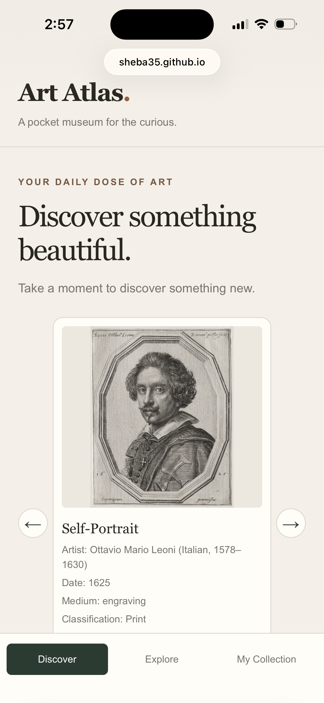
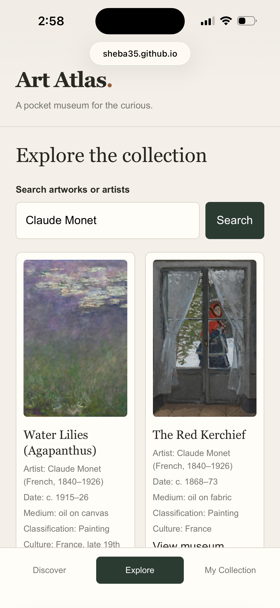
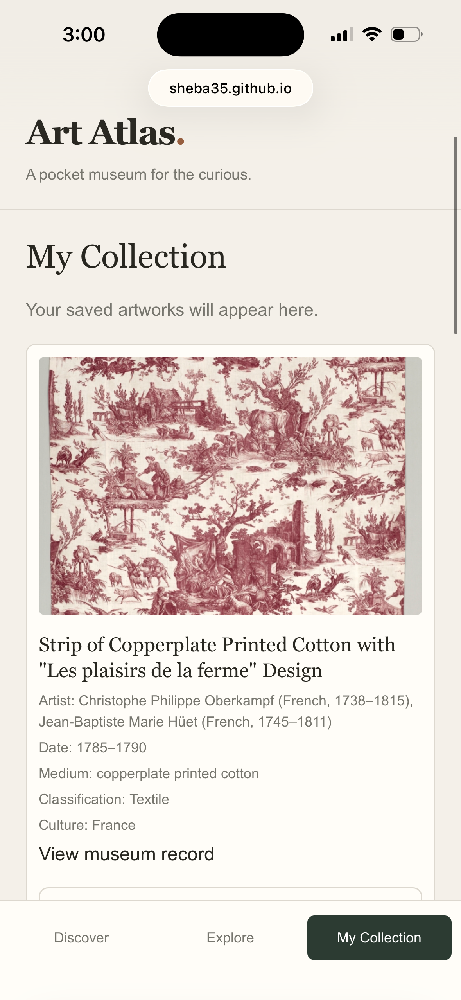
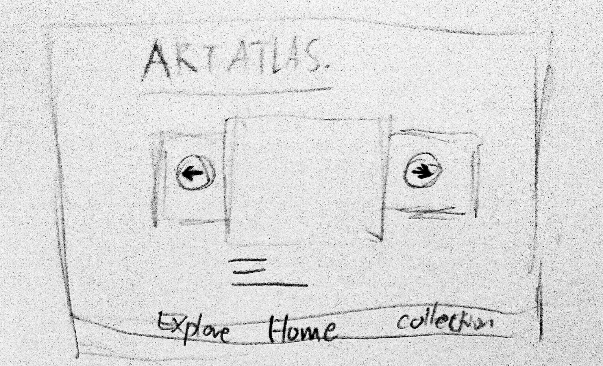
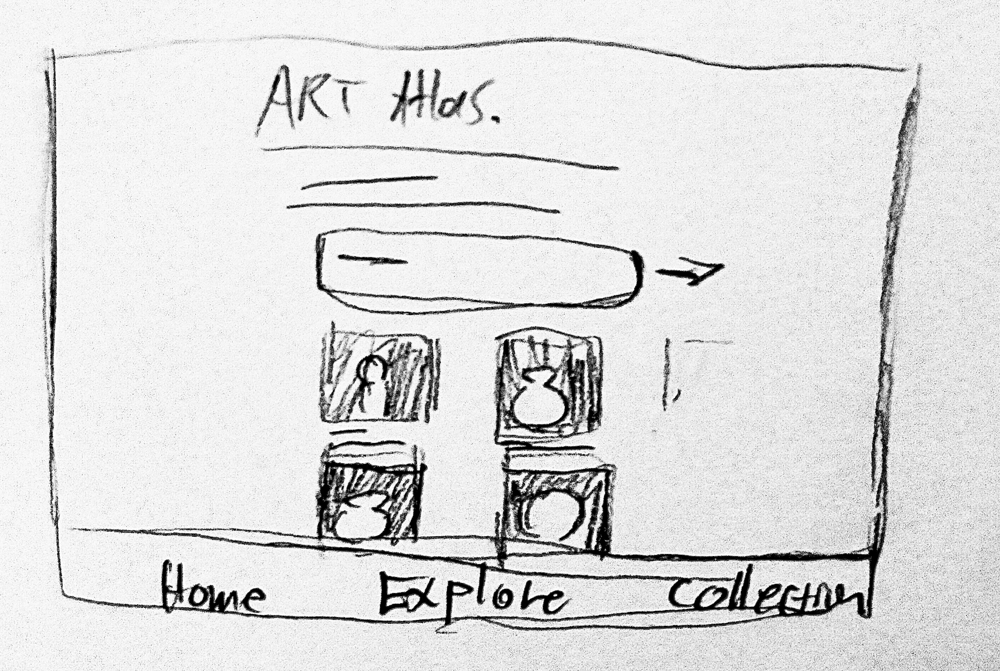
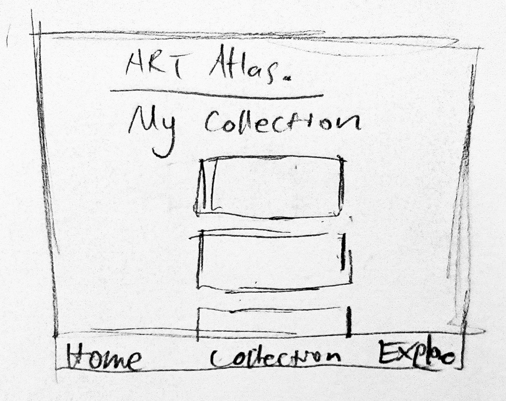

UX case study · UX 340
Art Atlas
A pocket museum for the curious. Art Atlas is a progressive web app concept designed to help people discover artwork, explore artists, and save pieces that inspire them.



Project overview
Art Atlas was created as a small progressive web app for discovering artwork and creative inspiration. The goal was to combine a clear, approachable browsing experience with the practical features of an installable web app.
Goal
The project explored how a lightweight digital experience could make browsing public museum collections feel approachable. The app needed to help visitors discover artwork, learn basic information about pieces and keep a personal collection of saved works.
Process
I developed the interface and built the application using HTML, CSS and JavaScript. I explored a number of museum open-access data and integrated the Cleveland Museum of Art's open-access API for artwork discovery. I also worked on the app manifest and service worker to support installation and limited offline use.
During development, I tested the experience in the browser and worked through issues involving image loading, offline access and color contrast.
Low-Fidelity Wireframes



Outcome
The result was an installable PWA with the ability to discover artwork and save a collection. The project demonstrated how different front-end languages, API integration, and UX come together in a small web application.
Reflection
This project strengthened my understanding of how a web app is structured beyond its visual interface. I gained experience connecting an API, organizing interfaces, and implementing a service worker. If I continued the project, I would improve offline image handling. Overall, this project strengthened my understanding of how APIs, thoughtful design, and accessibility work together to create an engaging user experience.